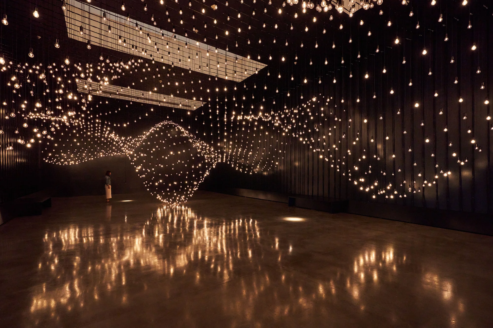 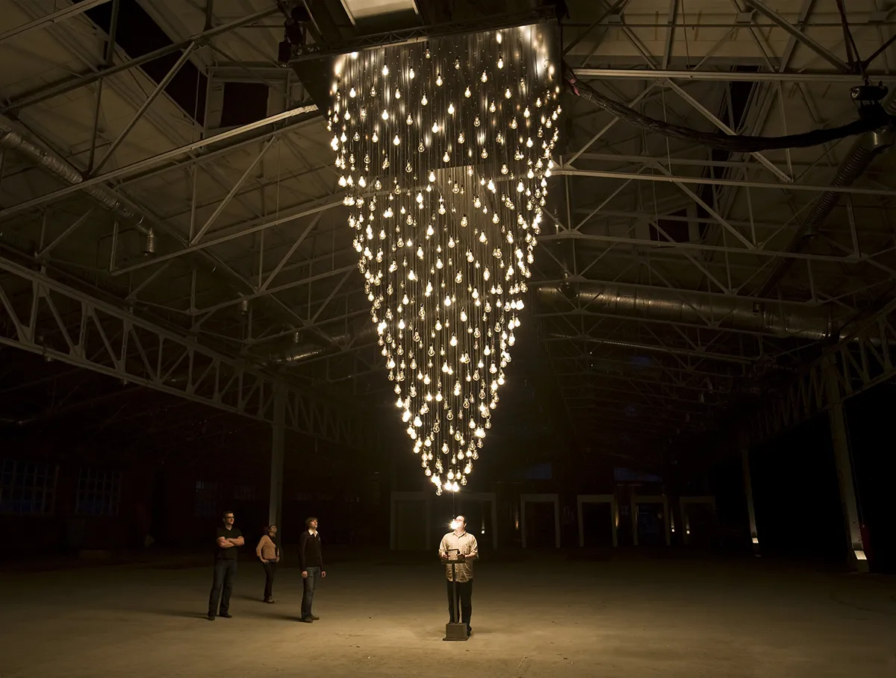
Casey Reas:criador do Processing, uma linguagem de programação para arte visual. Suas obras exploram a estética da programação e do código, gerando formas e padrões visuais complexos.
 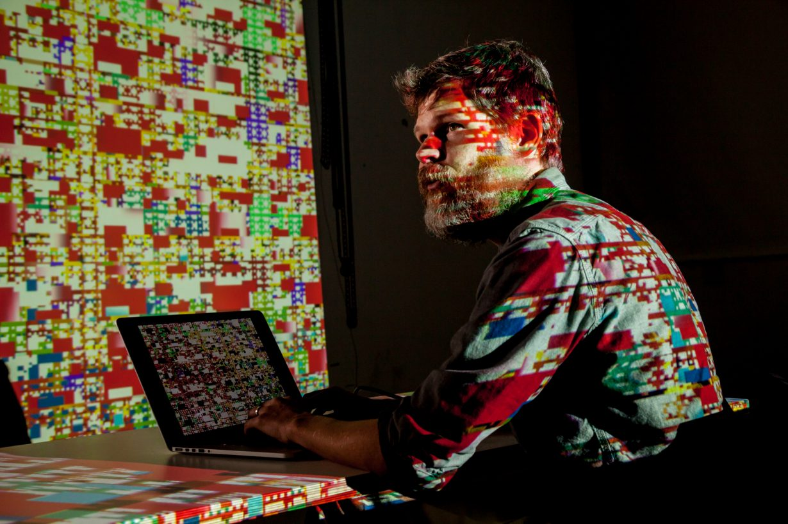
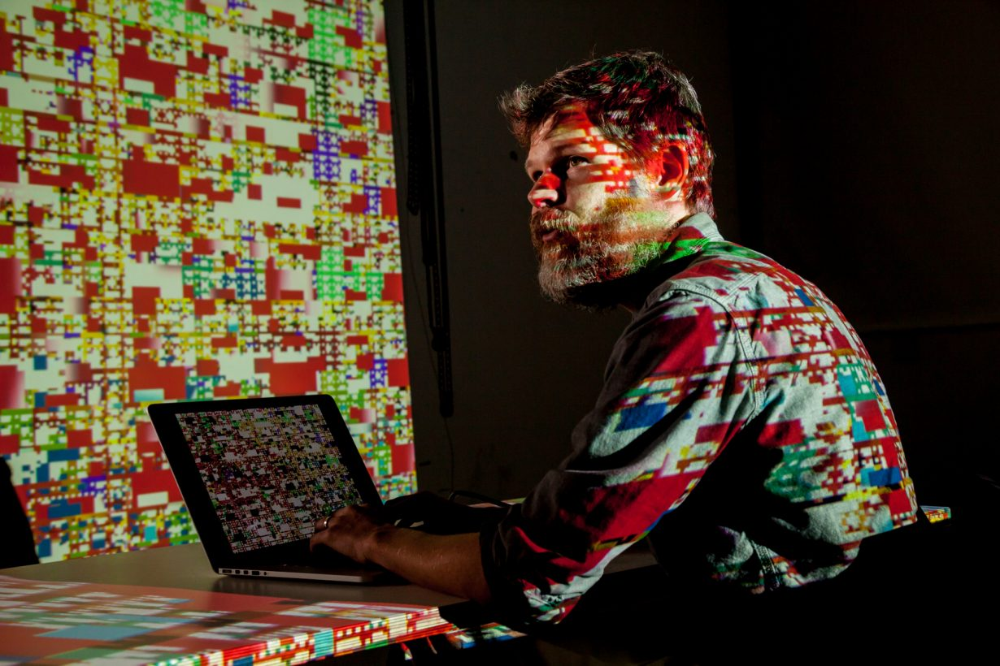
ODI (Joan Heemskerk e Dirk Paesmans):Este duo holandês é conhecido por suas obras de arte digital que exploram a estética e a funcionalidade da internet e das interfaces digitais, muitas vezes desafiando e desconstruindo a experiência online tradicional.
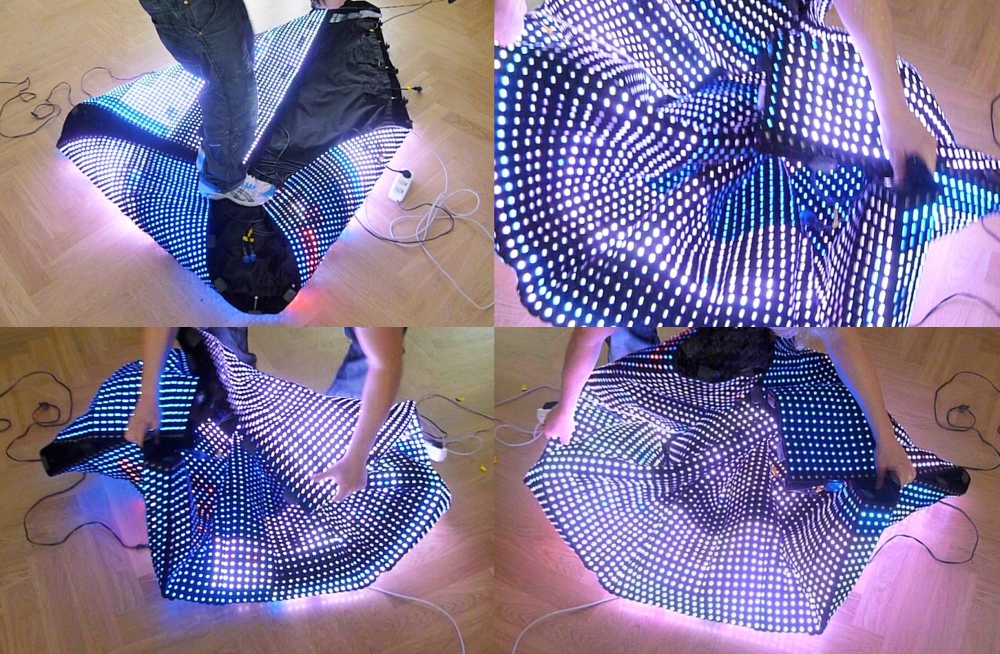 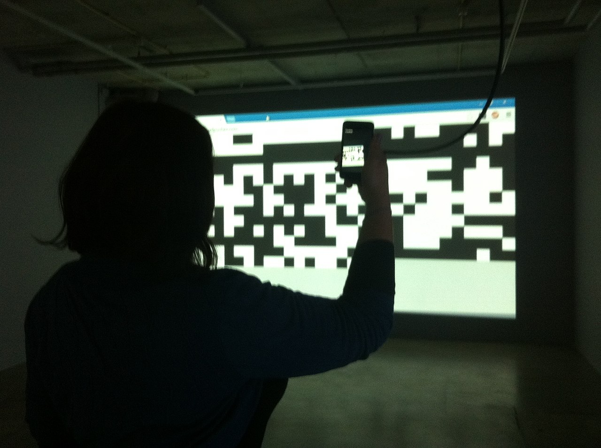
Beeple (Mike Winkelmann):Um artista digital americano que ganhou notoriedade por suas criações de arte digital diárias e pela venda de um NFT (token não fungível) no valor recorde de 69 milhões de dólares. Seu trabalho abrange desde ilustrações digitais até animações complexas.
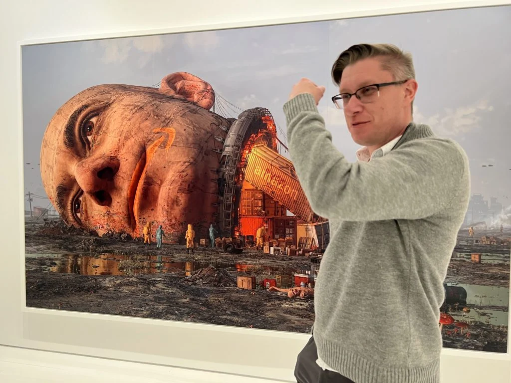 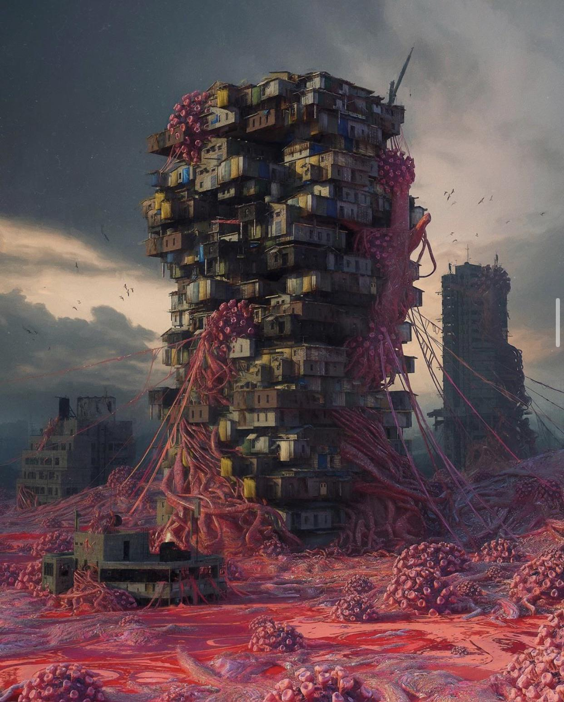
Manfred Mohr: Um artista alemão que utiliza algoritmos e geometria para criar arte visual abstrata. Seu trabalho é um exemplo significativo de como a matemática e o código podem ser usados para gerar arte.
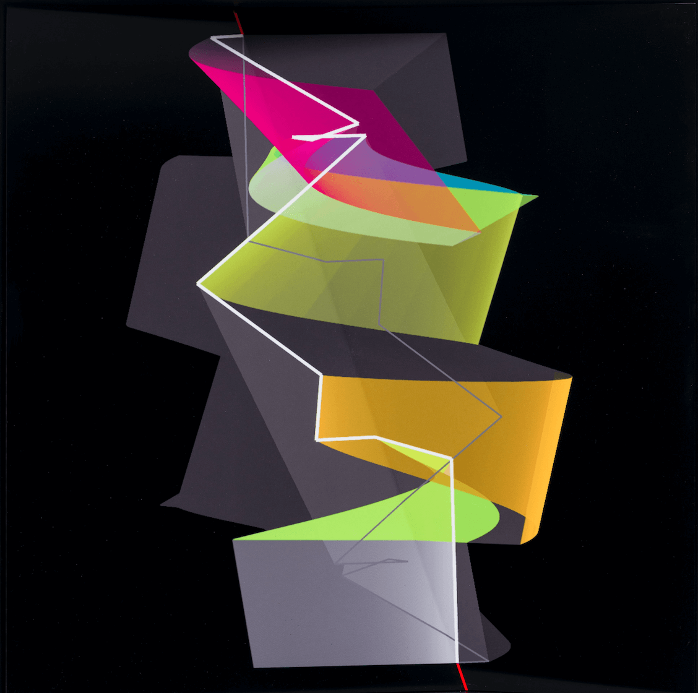 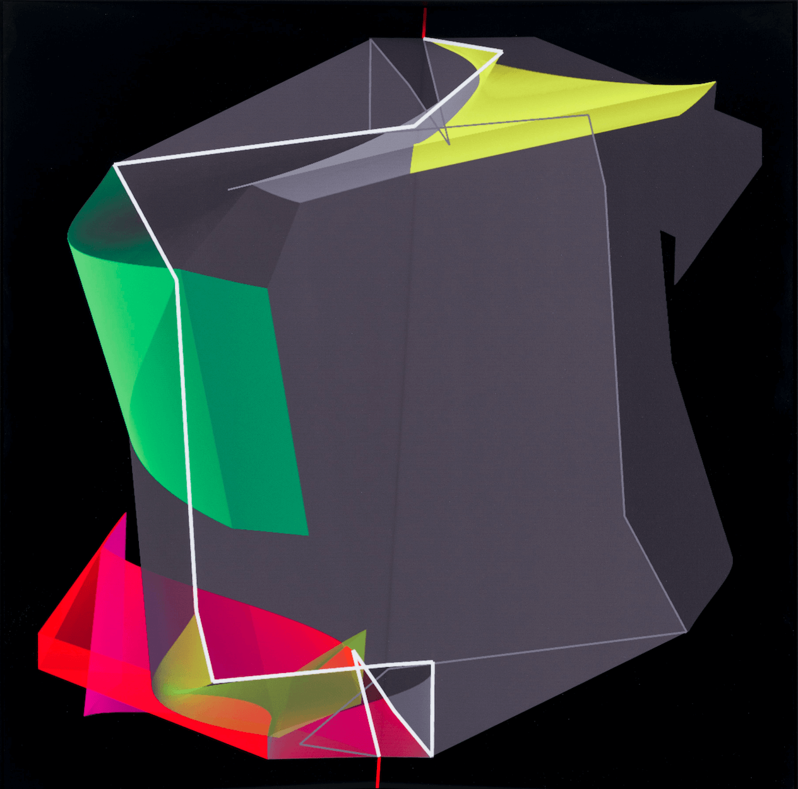
Mario Klingemann: Um artista e pesquisador alemão conhecido por suas explorações na interseção entre arte e inteligência artificial. Ele usa algoritmos e redes neurais para criar obras que questionam a criatividade e o papel do artista.
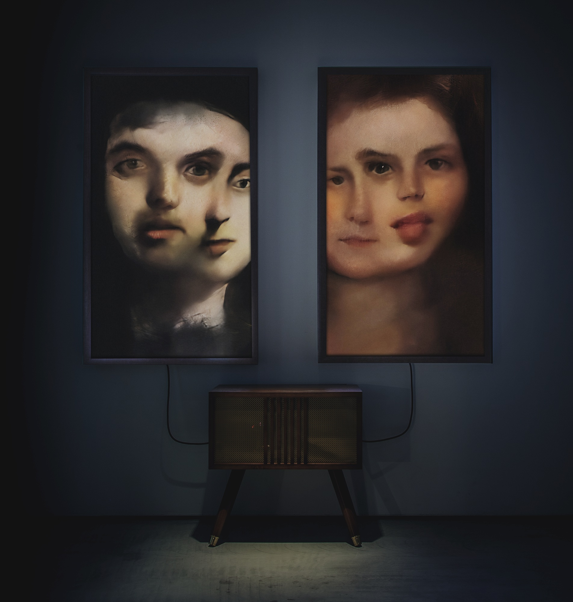 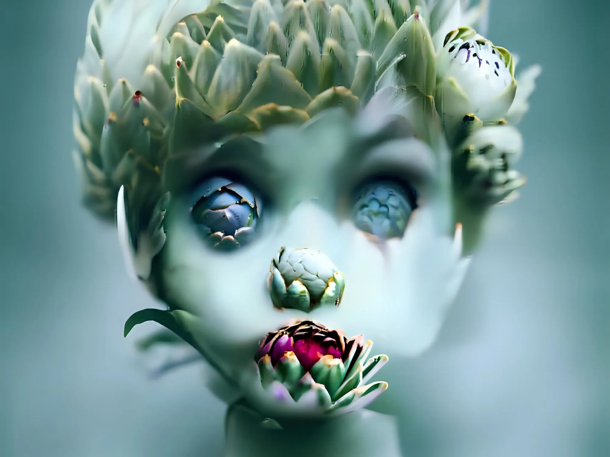